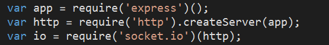

HISTORY
[Node.js, MongoDB, Socket.io, Express JS]
Node.js - Node.js is a framework that runs JavaScript on the server. It is primarily used for non-blocking, event driven servers, because of its single threaded nature. It was designed with real-time, push based (when a client requests work from a server) architectures in mind. Node uses asynchronous programming, which in simpler terms, means you can execute multiple things at a time, and you don’t have to wait to finish executing the current thing in order to move on to the next one!
History - Node.js was first created in 2009, by Ryan Dahl. Node.js was inspired after it’s creator was challenged by the problem and complexity of updating a progress meter on a web page, for uploading files with Ruby web servers.
It is...
- Lightweight and efficient
- Perfect for real-time applications (such as our chat demo)
- Works great with NoSQL databases, like MongoDB
- Can build fast and scalable applications
Socket.IO - a library that enables real-time, bidirectional and event-based communication between browser and server.
History Socket.IO was created in 2010. It was developed to open connections in order to facilitate real time communication, as it allows bi-directional communication between client and server.
MongoDB - A NoSQL database, used by many modern Node-based web applications. Unlike relational databases, like we are used to with MySQL, MongoDB does not use rows and tables, instead it uses collections of JSON data.
History - MongoDB was developed in 2007, it was intended to be an alternate solution to a traditional relational database, for applications where the tables and rows system was not the best match for that particular web application.
SETUP
Now that you have some background on the technologies used to build our web application, let's talk through how to build the chat portion of our application!
Let’s start with setup, to make sure we have all the necessary components downloaded and ready before we start programming.
Download Node.js here
* Make sure you choose the LTS Version
By downloading node, you are also downloading the node packet manager. After download and installation, check to make sure you have both of these downloaded by using terminal and typing in node -v, and npm -v, you should see the version numbers of both if you correctly downloaded.
[ CHECKPOINT ]
Node packet manager is used to publish packages and manage dependencies.
Next let’s go ahead and download MongoDB Atlas and MongoDB Compass.
MongoDB Atlas can be found here
MongoDB Compass is a GUI for MongoDB, so we can see what’s in the database, add collections, edit, delete, ect, instead of having to work with code, and it can be found here
Using MongoDB Atlas we are going to create a cluster, name the cluster, wait a few minutes because it takes some time for new clusters to provision, create a user, whitelist IP address. Make sure you switch to the free option, called ‘Shared Clusters’ as shown below.
We are just going to use the default settings provided, as shown below, then go to the next step.
* Whitelisting your IP address just means a list of trusted IP addresses so you can connect. After you add all IP Addresses that need to be added, and create a MongoDB User, click next and we will get our connection string to connect our application to our cluster! Make sure you remember your username and password because you will need it later on for your connection string and connecting to MongoDB Compass.
Now let’s create a new visual studio ‘Node.js with Express’ project.
Express js - Node by itself isn’t too great at serving web pages, Express Js allowed us to deploy the web application quickly, serve our static files, and easily handle the API parts of the code (app.post)
Visual studio automatically creates an app.js file and a package.json file for us (where our dependencies and general program attributes will be defined). *screenshots of these folders*
Next we are going to download Socket.IO and MongoDB driver in Visual Studios using the npm packet manager directly in visual studios.
Right click on npm in the Solution explorer and click ‘Install New Packages’.
Install both the mongoDB driver and Socket.IO.
Make sure the default setting of ‘Add to package.json’ is checked.
These can also be installed using npm in the command line. It makes no difference!
All of the dependencies we have installed so far will be in our 'package.json' file.
[ CHECKPOINT ] Open up the package.json file to make sure it has socket.io and mongodb which we just installed.
LET'S START CODING
Ok, let’s start programming!
Open up your App.js file that Visual Studios created for you. First we need to ‘require’ (initialize) our dependencies we downloaded using npm packet manager in this file.
We will be initializing socket.io, and express using the following syntax:

We also want to use var http = require(‘http’) in order to create the http server which will respond to our requests. Socket.io will be listening to our http server object.
Now we are going to start working with socket.io. What the io.on function below is doing is having the server listen on every connection. Every single socket io thing that happens, will happen inside of this io.on function. Once a connection has been made, events can happen. It is important to note, that when a socket running on a client is connected to the server, it is given a unique id. It never gets the same id. Even when you refresh the page, it gets a unique id when it connects again.
We also need to tell the server which port to listen on, which we set as port 3000 in this example. You can set it to any port number, it doesn’t matter, just make sure when you want to run/test your program you are typing in that port # in the URL.
[ CHECKPOINT ]
Let’s run our program now to make sure everything is working correctly so far. We should see this message when we run:
Let’s now also set up our Mongo connection by using our connection string we got from Mongo.
This connection will also go in 'App.js' Use the username and password you created when making your database user.
Few more things we need to include in our App.js file for now: The bodyparser is middleware that formats the data sent in our POSTS to some type. In our case, we are using json.
And we are using express middleware to serve our static directory.

As you saw in the demo, we have a signup page where you can choose to either sign up as an employer, or a student.
We won’t get much into the HTML, because it’s pretty self explanatory and nothing you guys haven’t seen before.
However, we do want to discuss how our Chat app is going to eventually ‘know’ who is who.
So once the user fills out a new profile, and signs up, they get put in the MongoDB.
We have two POST methods in App.js for signups, one for an employer signup, and one for student sign up.
Each of these will insert one object into the database, everytime a signup occurs.
 So as you can see, if it is an employer signing up they will be put into our companies collection, and if it is a student signup, they will be put into the students collection in our DB.
So as you can see, if it is an employer signing up they will be put into our companies collection, and if it is a student signup, they will be put into the students collection in our DB.
So for this to work, in our SignUp.html page we have two functions, a makeEmployerProfile function and a makeStudentProfile function that run when their respective buttons are clicked upon signing up.
In the makeEmployerProfile function we pass our /signupemployer POST the new employer object, and the same thing happens if it was a student, except it’s passed to /signupstudent. These objects contain all the data that was inputted in the signup form, including username and password and Mongo automatically assigns each object an ID.

[ CHECKPOINT ] Open up your MongoDB Compass and let’s make sure our DB is putting our new profiles in the correct Databases and everything is going smoothly. If you signup as an employer the object should be in the ‘companies’ collection, and if you sign up as a student the object should be in the ‘students’ collection.

Now let’s move on to how the login works, and the part it plays in our Chat app.
The login post methods are going to use a collection.findOne to find the first matching instance in the collection.
So in App.js we create two new POSTS, one for loginstudent, and one for loginemployer.
They are going to look like this:
 So for the loginemployer it is searching through all companies, and finding the object where the username and password matches, and for the loginstudent it searches through all students and does the same thing.
So for the loginemployer it is searching through all companies, and finding the object where the username and password matches, and for the loginstudent it searches through all students and does the same thing.
In our 'login.html' file we have two functions, studentLogin() and employerLogin(). Here we are going to be utilizing local storage and we will see why later on. When an employer logs in with their username and password we find them from the database and then put them into localstorage as the activeUser, also we put their ‘type’(employer or student) into localStorage as activeUserType.
We are eventually going to be using this information in localStorage to see who is logged in and who is online.
[ CHECKPOINT ]
Let’s login as the employer or student you created in step 12 and then check local storage.

Okay, now we are going to add some functionality to our Chat.html page.
We need to make sure we have the jquery script and socket io scripts added to our page.
We also need to add a text input where the user will enter their message, a send button, and a dropdown that will eventually display the list of users online.
We need to have a function for when our ‘form’ is submitted.
We get the value of the message from the textbox and call it 'message'.
We then create a message object which consists of the message, the sender, and the recipient. The recipient will be the value of the drop down selection. This will make more sense later if it doesn't right now.
And then we just emit a ‘SendingMessage’ event with the messageObject to the server side, and append the message to the div, in a outgoing row.

We are going to see the 'recievingMessage' event a little later.
So, now in our App.js file in our io.on(‘connection’, function(socket) { We are going to first emit an event when a client connects to a socket.
The server is sending a ‘requestName’ event to the client side, to get the connectors identity.
The syntax for this is just socket.emit('requestName');
So, when the client side receives the requestName event from the server side, the callback function is going to create a new object called identityObj in order to send the identity of the person who just connected to the socket. After the object is created we will send a sendName event to the server side, and send the identityObj we just created along with it.

So now we have to accept the ‘sendName’ event we got from the client side, with the identity object.
The callback function will create a new object called client, and basically copy over the identity objects name, type, and userid, but will also add a ‘socket.id’ attribute.
The reason we do this here, is because the unique socket ID is only available on the server side. And then we push the new client object into a clients array.
 Next, we are going to emit a ‘newUser’ object from the server to the client.
Next, we are going to emit a ‘newUser’ object from the server to the client.
Warning: There’s a lot of sending and receiving. It might get a little repetitive, but this is how sockets work!
Time to accept the newUser event on the client side.
The purpose of this event was telling our client that there was a new user connected, so we can eventually update our Active Users drop down that shows everyone who is online.
Our callback function for this is just going to send a grabActive event back to the server side, and pass the activeUserType along with it.
 Remember when we saved the active user and their type in local storage? That's where we got activeUserType, we just grabbed it from local storage and saved it as a variable.
Remember when we saved the active user and their type in local storage? That's where we got activeUserType, we just grabbed it from local storage and saved it as a variable.
Okay, you probably can guess what’s going to happen next by now.
We are going to accept the grabActive event on the server side and our callback function is going to have activeUserType as a parameter.
We initalize an array of active users.
Then we are going to loop through our clients array and check to make sure for each client in the array the type is not the same as the current activeUsers type.
If a client in our clients array does NOT have the same type, then we will push it to our activeUsers array.
This is because for our app we wanted students to only be able to talk to employers, and vice versa.
 So we then emit a recievingActiveUsers event to the client, with the list of active users.
So we then emit a recievingActiveUsers event to the client, with the list of active users. Of course, the next step is to recieve it on the client side so we recieve the event and list of active users and update our drop down with each active user being an option, and their corresponding socket.id number being the option value.
 Next we want to get any history with a particular user selected from the drop down so we emit an getHistory event, with the activeusers val as a parameter.
Next we want to get any history with a particular user selected from the drop down so we emit an getHistory event, with the activeusers val as a parameter.Since all our messages are stored in mongo we can grab the history on the server side and then display it on the client side.
(I will show you how they are stored in Mongo when we get to the 'RecievingMessage' event!)

So we create an identities object. The argument passed down is called otherParty. otherParty is the socket id of the person the user has selected in the drop down.
Now we are going to loop through clients array.
We are looking for 2 things;
1. We want the client from the clients array that has the same id as the client that caused this event.
That client is added to the identities object as the REQUSTOR, aka the one looking for the history.
2. We look for the client matching the other party argument. That's added to the identity object as the client that is on the OTHER side of the chat.
Now are are going to query the chat collection in the DB, and we are looking for messages that match two things. If the sender is the current user and the recipient is the other party, AND if the sender is the other party, and the recipient is me.
Because we need to get all messages from the other party that were sent to us, and all messages we sent to them.
Then it gets sorted by chronological order, this works because we added a time stamp to the messages when storing them in the DB.
Finally, we loop through the results and add an in or out value. It's a in value if the message sender was the other party, and it's a out value if we sent the message. And of course, send the results over to the client side using an socket.emit('recievingHistory', results).
Now on the client side we recieve the event and append the messages to display them. If they were labelled as 'outgoing' they will be in a outgoing div row, and incoming will be in a incoming div row.
You just use css to style these rows to make them look like a chat, so they are displayed on different sides of the page.

So remember when we sent a 'sendingMessage' event in our submit function when our form was submitted. The server side needs to recieve that event and store the message in the DB.

And then the client side will recieve the 'recievingMessage' event that the server side emitted, and append the message to the person it was sent to, along with the sender name.

SUMMARY
Overall, Node.js is a really cool tool to learn and know how to use!
This application only scraped the surface when it comes to Node’s abilities.
There are tons of cool things you can do with Node and tons of helpful packages that help you do these things.
If you have some time it’s a great skill to begin learning and also helps you get more comfortable connecting the client side and server side, atleast it did for me.
REFRENCES AND RESOURCES
W3 Schools is a great resource for learning NodeJS while working with MongoDB you can find that here
The Socket.IO documentation can be found here here
MongoDB documentation can be found here here
Express routing guide: here
To learn more about Node JS these sites are also helpful:
Beginner's guide to Node
W3 Schools
Node js Crash Course (Video)